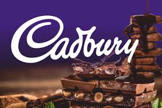
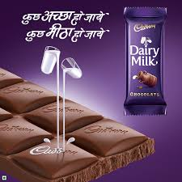

How India's most loved chocolate brand transformed from a children's snack into the symbol of every celebration — and then reinvented itself for the digital age.

Cadbury is not just a chocolate brand in India — it is a brand deeply connected with celebration, relationships, gifting, and everyday happiness. Over the years, Cadbury has built market leadership not only through product quality but through emotionally powerful marketing campaigns that changed consumer behavior at scale.
This case study explores two of Cadbury's most successful campaigns. The first, Kuch Meetha Ho Jaaye, transformed chocolate from a children's treat into a celebration product for families and occasions. The second, Not Just a Cadbury Ad 2.0, showed how a legacy brand uses data, personalization, and purpose-driven storytelling to create business growth and cultural relevance simultaneously.
Together, these campaigns provide a complete masterclass in brand strategy, consumer psychology, messaging, creative storytelling, distribution systems, and scalable growth marketing.
Cadbury's "Kuch Meetha Ho Jaaye" campaign is one of the most important brand campaigns in Indian marketing history. Before this campaign, chocolates were largely perceived as snacks for children. Cadbury identified a powerful cultural insight: in India, every celebration ends with something sweet.
Instead of competing directly against mithai, Cadbury strategically positioned itself as a modern form of sweetness that belongs in every happy moment. This was a category-expansion strategy, not just a product promotion. The brand sold a ritual — every good moment deserves sweetness.
"The tagline 'Kuch Meetha Ho Jaaye' moved beyond advertising and entered daily conversation — a rare achievement where a tagline becomes a consumer habit."
The campaign entered multiple consumer moments: exam results, salary day, first success, festivals, weddings, and family gatherings. Cadbury did not just grow market share — it grew the market. This campaign reportedly helped drive consistent multi-year growth and made chocolate part of India's celebration culture.

Launched during the festive season, this campaign was built around helping local retailers and small businesses. The strategy used a powerful insight: during Diwali, people want to support local businesses while celebrating through gifting.
Cadbury built a personalized advertising ecosystem where local shops could generate celebrity-backed ads using Shah Rukh Khan. This was a brilliant combination of celebrity trust, localization, personalization, and commerce support.
Consumers were not just buying chocolate — they were supporting their local neighborhood businesses. This transformed the purchase decision into an emotional and social action. The campaign combined digital video, paid ads, PR, social sharing, WhatsApp virality, microsites, and geo-targeted placements — a complete omnichannel growth funnel.
Cadbury didn't sell chocolate — it sold the sweet moment. By attaching itself to cultural rituals, the brand became an indispensable part of everyday celebrations.
By targeting adults, families, and occasion buyers — not just children — Cadbury grew the entire category before focusing on its own share within it.
The Not Just a Cadbury Ad campaign aligned brand sales with a social good — supporting local retailers. This made every purchase feel meaningful and earned deep consumer goodwill.
Using AI and geo-targeting to create thousands of personalized local ads was a technological leap that drove relevance, trust, and shareability simultaneously.
Campaign 1 built desire through emotional memory. Campaign 2 converted that desire into measurable sales. Together they represent the two pillars of successful brand marketing.
Cadbury showed that legacy brands can stay relevant by adapting technology and purpose-marketing without abandoning their emotional core identity.
The biggest lesson from Cadbury's campaigns is that great marketing is built on two pillars: brand memory and conversion system. Cadbury mastered both by keeping its emotional core intact while evolving its execution with technology and purpose.
The brand's success came from understanding that people don't buy products — they buy stories, emotions, and identity. By consistently selling the feeling of celebration, Cadbury created a category it can never lose — because the emotion is the category.
For modern brands, the lesson is clear: emotional branding creates desire; performance marketing converts it. You need both working in harmony.
At Brand Business Talk, we help brands with research, strategy, market insights, and growth recommendations. Let's build your brand growth strategy together.